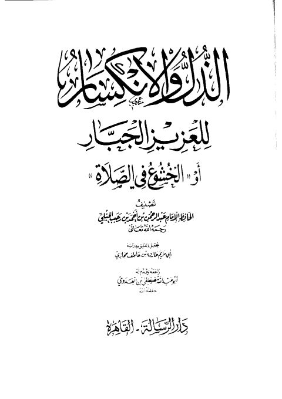

الذل والأنكسار للعزيز الجبار أو الخشوع في الصلاة
Authors: ابن رجب الحنبلي
Editors: مصطفى بن العدوي ، بن عاطف حجازي
Publishers: دار الرسالة
Download Downloads need an internet connection.
- Published
- 1430 -2009
- Country
- القاهرة، مصر
- Edition
- 1
- Volumes
- 1
- Pages
- 107
- Type
- كتاب
- Category
- الزهد والرقائق
Description
**▫️ العنوان: الذل والأنكسار للعزيز الجبار أو الخشوع في الصلاة** ▪️ المؤلف: #عبد_الرحمن_بن_أحمد_بن_رجب_الحنبلي ▫️ المحقق: #بن_عاطف_حجازي • #مصطفى_بن_العدوي ▪️ الناشر: #دار_الرسالة ▫️ تاريخ النشر: 1430 -2009 ▪️ بلد النشر: القاهرة، #مصر ▫️ الطبعة: 1 ▪️ عدد الأجزاء: 1 ▫️ الصفحات: 107 ▪️ نوع الوعاء: #كتاب ▫️ التصنيف الرئيسي: #الزهد_والرقائق ۪